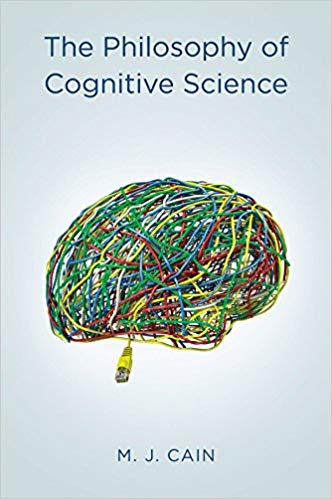
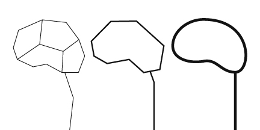

Part II: The Use and Abuse of Vegetational Concepts
Before watching this one-hour long clip, I was mostly confused with the terminology around cybernetics; I did not fully understand what the word/term meant. I can now interpret the word as the bridge between human beings and machine through a large and complicated network system. I found the beginning part interesting about the man who dreamt he shot his wife - Sigmund Freud’s theory of the brain reminds of a topic we are discussing in my Philosophy of Cognitive Science course this semester. The classical computationalism theory states that the human brain works like a computer or “syntactic engine” and “runs the program [like] a mechanical process that does not require any intelligence or creativity on the part of the machine” (Cain). Next, the film moves on to bring up Jay Forrester and his view on cybernetics, this time on a similar view to the concept of connectivism from my Philosophy of Cognitive Science class. Like Forrester, the theory explains that “cognition is based upon the activity of networks of simple units that bear considerable similarities to the networks of neurons we find in the brain” (Cain). This neural networks concept is then placed on a natural scale for the ecology movement, where “loops” could be used to help stabilize the natural world, much like it does in our heads. The part of the episode I found most interesting is the section about using cybernetics to help world issues such as overpopulation. I found it extremely intellectual and smart to apply these concepts to such issues, but I do not believe that at the time, these models could be utilized effectively to get what Forrester and many others thought would work. Network communication brings up a lot of controversial issues that remind me a lot about “Nature v. Nurture”, but continues to become more advanced and useful in our everyday lives.
Work Cited
Cain, Mark J. "The Philosophy of Cognitive Science." 9 Nov. 2015. Polity Press. 11 Feb. 2019.
 